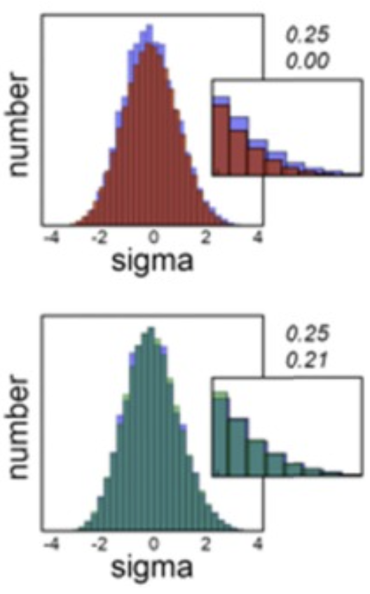
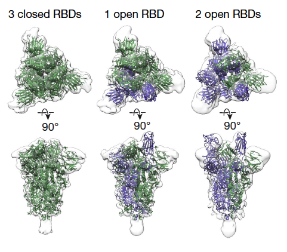
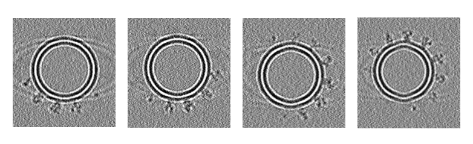

Background
Cryogenic electron tomography (cryo-ET) is an imaging technique to reconstruct high-resolution 3d structure, usually of biological macromolecules. Samples (usually small cells like bacteria and viruses) are prepared in standard aqueous median (unlike cryo-EM, where samples are frozen) are imaged in transmission electron microscope (TEM). The samples are tilted to different angles (e.g. from \(-60^\circ\) to \(+60^\circ\)), and images are obtained at every incremented degree (usually every \(1^\circ\) or \(2^\circ\)).
The main advantage of cryo-ET is that it allows the cells and macromolecules to be imaged at undisturbed state. This is very crucial in many applications such as drug discovery, when we need to know the in-situ binding state of the target of interest (e.g. viral spike protein) with the drug.

In order to reconstruct macromolecules, tomographic slices need to be processed through a pipeline. A typical cryo-ET data processing pipeline includes: tilt series alignment, CTF estimation, tomogram reconstruction, particle picking, iterative subtomogram alignment and averaging, and heterogeneity analysis. Unlike cryo-EM, many algorithms for cryo-ET processing are still under development. Therefore, a large database of cryo-ET to test and tune algorithms is important. Unfortunately, collecting cryo-ET data is both time and money-consuming, and the current database of cryo-ET is not large enough, especially for deep learning training which requires a large amount of data. Therefore, simulation becomes a substitute to generate a large amount of data in a short time and at low expense. In this post, we will focus on the simimulation of membrane-embedded proteins.
Workflow
We will use the Membrane Embedded Proteins Simulator (MEPSi), a tool incorporated in PyCoAn to simulate SARS-CoV-2 spike protein (Rodríguez de Francisco et al. 2022). Here, I will briefly go through the workflow of MEPSi.
1. Density modeling
In the density modeling, atom coordinate lists of macromolecules of interest are given, and a “ground-truth” volume representation is simulated by placing the given macromolecules on the membrane with specified geometry. The algorithm uses a 3D Archimedean spiral to place the molecules at approximately equidistant points along the membrane. Random translations with sa bounding box defined by the equidistance and the maximum XY radius of the molecules will then be applied. This ensures there is no overlap between macromolecules on the surface. The volume is generated using direct generation of membrane density and Gaussian convolution of the atom positions.
Optionally, a solvent model can be generated and added to the density. In order to keep the computational cost low, a continuum solvent model with an adjustable contrast tuning parameter is used. A 3D version of Lapacian pyramid blending is used to account for displacements of one object from another to mitigate edge effects and emulates the existence of a hydration layer around the molecules.
2. Basis tilt series generation
In this step, an unperturbed basis tilt series is generated from the simulated volume. The individual tilt images are obtained by rotating the volume around the Y axis and projecting the density along Z axis. The reason that a basis tilt series is generated before final tomogram simulation is to reduce computational cost. It can speed up the process quite a lot if a perturbation-free basis tilt series is first generated to allow the user explore perturbation parameters (e.g. contrast transfer function and noise) before generating final tomograms from perturbed basis tilt series.
3. CTF
One possible perturbation we can add to the basis tilt series is the contrast transfer function (CTF), which models the effect of the microscope optics. One major determinant of the CTF is the defocus value at the scattering event, which changes while the electrons traverse the specimen. In order to simplify the problem, we assume that the simulated specimen as an infinitely thin slice so only focus changes caused by tilting need to be considered. Projected tilted specimen images are subjected to a CTF model in strips parallel to the tilt axis with the defocus value modulated according to the position of the strip center.
4. Noise
The noise model is expressed as a mixture of Gaussian and Laplacian, in contrast of white additive Gaussian usually used in many other simulation applications. The noise in the low-dose images contrivuting to a tilt series tends to have statistically significant non-zero skewness, which cannot be modeled by Gaussian error model alone.

5. Tomogram generation
Finally tomograms are simulated from the perturbed basis tilt series with user-specified tilt range and increment.
Results
In order to fully demonstrate the capacity of MEPSi, tomograms were simulated from a sample containing three different conformations of SARS-Cov2 spike protein: 6VXX, 6VYB and 6X2B, with ratio 1:1:2. Protein coordinate files in .pdb format were obtained from RCSB PDB, and preprocessed in ChimeraX to align with z-axies in order to be modeled in orrect direction in density simulation.

Solvent and CTF were added. A SNR of 0.5 was used. Finally we generated tomograms every \(1^\circ\) from \(-60^\circ\) to \(+60^\circ\). Below were four tomograms with different tilt angles simulated.
